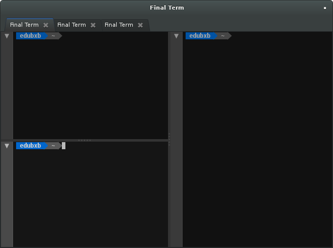
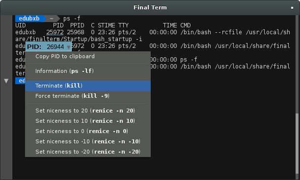
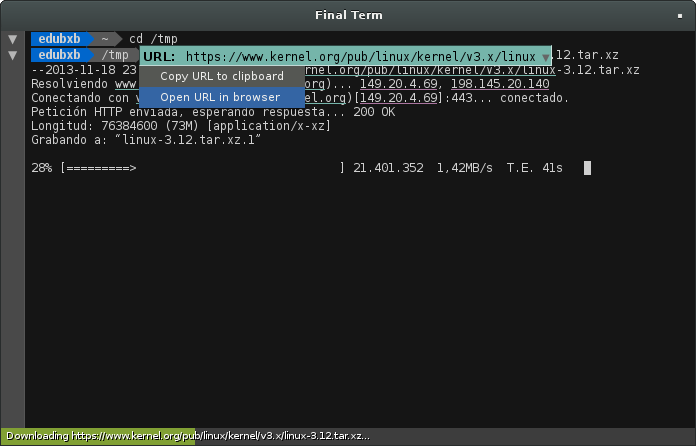

Final Term: ¿El terminal «definitivo»?
Normalmente, los administradores de sistemas UNIX/Linux suelen recurrir a la consola de comandos para la mayoría de la tareas de gestión, sobretodo cuando se realizan de forma remota por SSH, por poner un ejemplo. También son muchos los desarrolladores que dejan de lado las herramientas gráficas (normalmente IDE's) y utilizan la consola para determinadas tareas que en cierta manera pueden ser ejecutadas con mayor eficacia de esta forma, un ejemplo sería el uso de sistemas de control de versiones como pueden ser Git o Mercurial.
Trabajar con la línea de comandos implica utilizar una aplicación de emulación de terminal, existen en la actualidad multitud de alternativas, en especial para Linux. En este artículo vamos a comentar una de ellas que hace poco ha salido a la palestra: Final Term.
Final Term es un proyecto relativamente joven, el primer commit data de hace unos 7 meses, y citando palabras del autor: ‒está bajo un fuerte desarrollo, todavía no es estable y le faltan características‒. La aplicación tiene, entre otras, dependencias con la librería GTK+, utilizada para la interfaz gráfica, también depende de la librerías Clutter y Mx, que aprovechan el potencial de OpenGL para la creación de componentes de interfaz de usuario, algo bastante peculiar para este tipo de aplicación.
Al igual que otras aplicaciones similares, disponemos de la opción de crear pestañas con terminales nuevos y poder dividir tanto horizontal como verticalmente para tener varios terminales en la misma vista de forma paralela.
Lo que bajo mi punto de vista hace que esta aplicación sea realmente atractiva es la integración que tiene con los resultados que muestran en el terminal los diferentes comandos que utilizamos, en la imagen a continuación, podemos ver como en la salida del comando ps, haciendo click en un PID cualquiera abriremos así un menú contextual que nos permite hacer distintas acciones sobre ese PID, como mandar una señal a través del comando kill o bajarle la prioridad al proceso mediante el comando renice:
En este otro ejemplo, vemos como se descarga mediante el comando wget la versión 3.12 del Kernel de Linux, podemos ver como una barra de progreso es mostrada en la parte inferior indicando el estado de la descarga, de la misma forma que el propio comando wget lo muestra en la consola, también podemos hacer click sobre la propia URL del archivo para mostrar un menú contextual con las opciones de copiar o abrir en un navegador dicha URL:
Otra característica curiosa es la posibilidad de contraer la salidas de los distintos comandos, haciendo uso del triangulo en la barra lateral izquierda, dejando solo a la vista lo que nos interese. El uso de OpenGL para el dibujado de la interfaz hace que el desplazamiento sea muy suave, también notable durante la entrada de texto, algo que normalmente es más brusco en los emuladores de terminal convencionales (por así decirlo).
Para los más curiosos, comentar que en la página principal de la web del proyecto hay disponible un screencast donde se pueden ver en acción las características aquí explicadas junto con algunas más.
Los interesados en seguir el desarrollo de esta herramienta pueden acudir a GitHub que es donde se aloja el proyecto (en estos momentos tiene más de 3000 seguidores), ir al página del proyecto en sí, o visitar el blog donde el autor informa de las últimas novedades.
Recalcar de nuevo que es un proyecto joven, el propio autor no recomienda todavía su uso en entornos productivos, así que toca esperar.